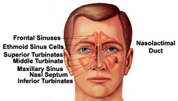

1. Sinusitis
Sinusitis is one of the most common chronic (ongoing) conditions in the United States effecting fifty million Americans, 20% of the nation's population.
Sinusitis is often a chronic (ongoing) disease that includes the symptoms of nasal obstruction (difficulty breathing through the nose), nasal drainage, decreased sense of smell, facial pressure, and frequent sinus infections. Allergies and related respiratory problems such as asthma can also be associated with chronic sinusitis.
It can sometimes be difficult for patients to decipher if they are suffering from allergies, an upper respiratory tract infection, or a sinus condition. Symptoms and signs for each condition differ, and each diagnosis requires a unique treatment regimen. The Oregon Sinus Center team can help make an informed choice as to the best management strategy for a patient with any of these conditions.
After getting the correct diagnosis, a number of medical treatments can be started. These medications may include anti-inflammatory nasal sprays, decongestants, oral inflammatory inhibitors, and systemic steroid medications. It is important that the physician and patient recognize that medications are often required on a long-term basis.
In some cases, surgery is required using a telescope (endoscope) which is placed through the nostril. This type of surgery is often referred to as Endoscopic Sinus Surgery, which is minimally invasive and does not require any external incisions. It is our goal that after surgery, patients will not require any further surgery on the nose and sinuses.
In some cases, however, sinusitis can return. Our surgeons have a particular interest in patients whose sinusitis has failed traditional surgery and require advanced techniques to control the underlying inflammation. The Oregon Sinus Center actively conducts ongoing research into better treatments for sinusitis.

2. Nasal & Sinus Polyps
Nasal polyps are associated with sinusitis and occur when the lining of the sinuses swell. Polyps may block the nasal airway, creating difficulty in breathing. Polyps may also block the natural drainage of the sinus cavities leading to infections. Polyps are generally thought to occur as a result of an ongoing inflammatory process within the nose and sinuses.
After getting the correct diagnosis, our team of can help patients decide on the most appropriate treatment plan. Most commonly, medications are tried as first line therapy. Different combinations can be tailored for individual patients. In some cases, a patient's disease cannot be fully controlled with medication and surgery may be recommended. This surgery is done with telescopes (endoscopes) through the nose in a minimally invasive fashion.
Following this type of surgery, it is very important to maintain medical treatment. Additionally, the nose and sinus cavities must be watched carefully to prevent the return of the polyps. It is our goal that after surgery, patients will not require any further surgery on the nose and sinuses to remove polyps.
In some cases, however, polyps may return. Our surgeons have a particular interest in patients who have experienced the return of polyps following previous nasal and sinus surgeries. We are experts in the more advanced techniques that may be required to control polyp formation. The Oregon Sinus Center actively conducts ongoing research into better treatments for sinus polyps.
3. Smell and Taste Disorders
Disorders of smell and taste can have a large impact on quality of life. Currently about 2 million adults in the United States are evaluated for smell and taste disorders every year, but it is believed many more cases go unreported. It is estimated that up to 80% of taste is a result of olfactory (or smell) input. As a result, loss of smell is frequently interpreted as a loss of taste.
Problems with smell and taste can be due to a variety of causes. Examples of these include chronic rhinosinusitis, polyps, allergic rhinitis, upper respiratory infection, trauma, tumors or other neurological disorders.
Evaluations of these disorders include a thorough history and physical exam with an endoscope, objective smell testing, and may also include imaging. Treatment of these problems depends on the problem and the severity of the loss. Our team works with each patient to best understand the cause of their smell and taste problems. From there, a therapeutic plan can be initiated.